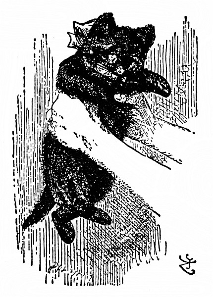

Věnování
Alenka v kraji divů
Dolů králičí dírou
Kaluž slz
Kuriální závod a sáhodlouhý obrázek
O tom, jak Vilík komínem vylít
Houseňákova rada
Vepř a pepř
Bláznivá svačina
Královnino kroketové hřiště
Paželví povídka
Humří čtverylka
Kdo ukradl vdolky
Alenčino svědectví
Za zrcadlem, a s čím se tam Alenka setkala
Předmluva
Dům za zrcadlem
Zahrada živých květin
Hmyz za zrcadlem
Tydliták a Tydlitek
Vlna a voda
Valihrach
Lev a jednorožec
„Je to můj vynález“
Královna Alenka
Třesení
Probuzení
Komu se to zdálo?
O autorovi Alenčiných dobrodružných příběhů
Titulní strana
← Předchozí kapitola
Probuzení
– – – – – a bylo to opravdu kotě.

Titulní strana
Následující kapitola →